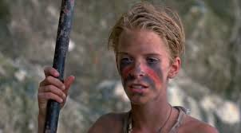

Blog #2
Our civilization wasn’t as civilized as I thought. There were so many ways people were being irresponsible. People spoke when they didn’t have the conch and people were beginning to question my orders. Man, my orders were for our own good and survival. However, the prize went to the hunters. They were the reason why we missed our chance of getting rescued. Obviously, I was extremely infuriated with the hunters. It was their job to maintain the fire and when a ship came along, the fire wasn't even lit. That was our chance to get rescued and the hunters messed up horribly. We could’ve been back home away from the island, away from struggling to maintain a civilization and good health. I almost tasted the feeling of being back home but no, it didn’t happen. The person I placed the blame on was Jack.
He was the leader of the hunters and he should’ve been taking responsibility for his role. However, he was too concerned with slaughtering a pig. He put all his priority toward it and he sacrificed civilization as a result. Then after finally bringing back a pig, Jack’s tribe of the hunters displayed arrogance and ignored the complaints from me, their leader. It was frustrating how they didn’t care about their fatal negligence. If Jack and the hunters don’t change their behaviour we’re done for. Well maybe things could get better. It’s not like the ship won’t come back. Yeah, that probably wasn’t our last chance to get rescued. We just need to wait and hope that nothing goes wrong along this lengthened road of survival.